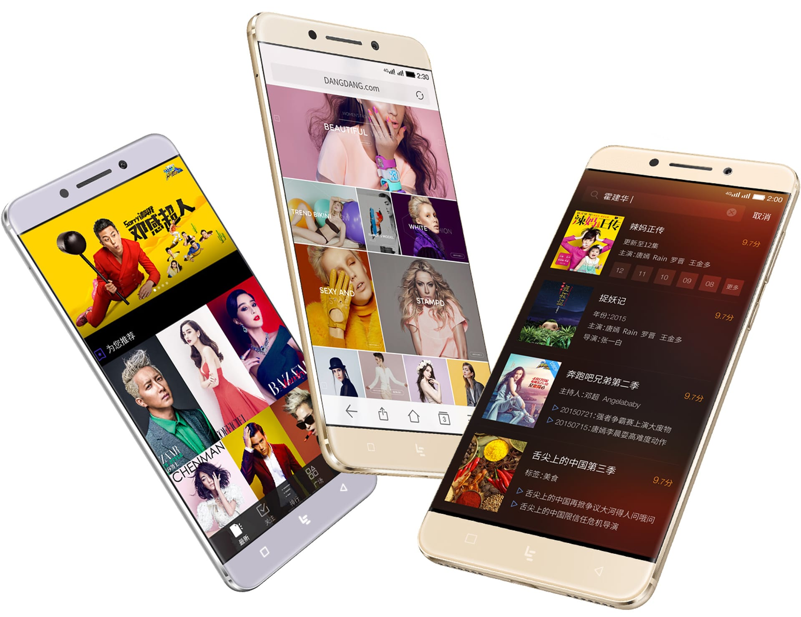
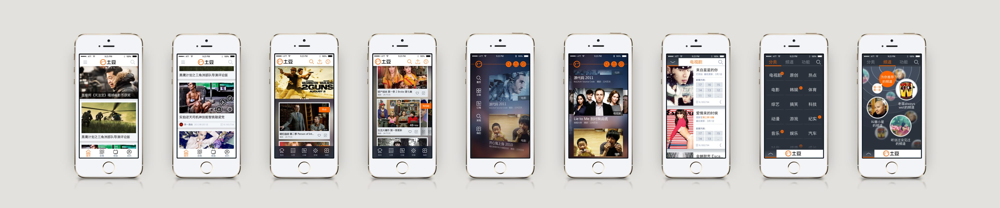
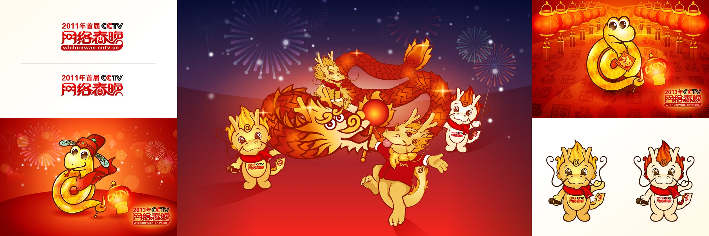

Loading...
Loading...

LeEco: Le Eco Smartphone OS UI&UX Design
2014-2016
Role: Head of UX & Design Team Lead
During my time at LeEco (formerly known as LeTV), I was responsible for building the design team from the ground up and establishing the entire workflow system. Starting with just a handful of designers, I scaled the team to over 30 members, including interaction designers, UI designers, UX researchers, and motion graphic/video designers.

As a new player in the highly competitive smartphone market, LeEco developed its operating system based on Android. One of our biggest challenges was to create a highly localized and differentiated design that would stand out in both functionality and visual identity. To address this, we invested significant effort in creating a diverse range of visual themes to cater to different consumer preferences, which was a popular approach on Android at the time.

Given LeEco’s roots as a video streaming platform, video consumption became a core focus for the smartphone experience. We integrated live streaming and TV program scenarios directly into the home screen and the left "minus-one" screen, enabling users to quickly access live content and set up reminders for their favorite shows and celebrities via the system calendar app. This approach enhanced user engagement and brought video content consumption to the forefront of the device experience.

From a UI design perspective, we built a robust foundation for the entire system, covering details from typography and color guidelines to the behavior of buttons (single, multi-select), interaction feedback, pressed and disabled states, and more. We took the pioneering step of adopting vector-based tools for designing high-resolution screens, moving away from the inefficient Photoshop workflows. This forward-thinking choice was later validated and became an industry standard practice.
To bridge the gap between design and development, we created a proprietary animation controller for Android, named the Animer. This tool allowed us to standardize motion feedback across all native apps, making it easy to transform static design prototypes into interactive app demos for internal testing and stakeholder reviews.

In addition to designing the OS "eUI", I actively participated in LeEco smartphone launch events, contributing to keynotes and highlight showcases of system features. Following the launch, LeEco smartphones received strong user feedback and set multiple sales records in the industry at that time, reflecting the market's positive reception to our user-centric design approach.
Tudou: Web & App Design
2014-2016
Role: Senior UX & UI Designer
Working at Youku Tudou was a joyful and memorable experience. The team was deeply user-focused, always thinking about how to better serve both video viewers and UGC/PGC content creators. This strong user-centric mindset shaped every design decision and fostered a highly collaborative and innovative environment.
During my time there, I led efforts to restructure the overall logic of product pages and develop a modular component system for front-end displays. Previously, different video presentation formats were visually diverse and inconsistent, making it difficult to create a cohesive user experience. Our approach simplified these various layouts into a unified information framework, allowing content to be flexibly mixed and pushed to different user segments using the same container structure. This was quite forward-thinking in the early 2010s, when most platforms prioritized content individuality over design consistency.
We successfully implemented a grid system across the Tudou website, enabling different screen sizes to display an optimized number of video items and making the most of available screen real estate. Additionally, we upgraded the iconography system to vector-based designs, paving the way for high-resolution Retina displays and future-proofing the visual experience.


In the early 2010s, Tudou underwent a major brand refresh. This presented an opportunity to comprehensively redesign system pages and UI components, integrating them into a more cohesive and modern visual language. The hands-on experience from this large-scale redesign provided me with a strong foundation in systematic design thinking, which proved invaluable later when I led the design system development at LeEco.

CCTV: Website & Visual Design
2014-2016
Role: Visual & Web Designer
My role at CCTV.com was my first job after graduating from university, and it was an incredibly formative experience. Beyond learning how to create impactful visual and web designs, I gained a deep understanding of how to interpret design requirements and effectively convey key messages to a diverse audience. Most importantly, I learned how to manage design projects systematically, applying structured workflows to deliver high-quality, standardized outputs efficiently.

During my time at CCTV, I contributed to numerous high-profile projects, including online promotional materials for major national programs and even the iconic Spring Festival Gala. Our team's designs were seen by a vast audience across China — from elderly viewers in their 80s to young children just starting to explore the internet — making it crucial to create visuals that were both universally accessible and culturally resonant.

Over the years, I transformed from a student designer focused primarily on illustration and personal style into a versatile visual designer capable of delivering professional-level web and visual content at speed. I also had the opportunity to participate in project management tasks, mentoring new team members and helping to guide their growth within the team. This experience not only advanced my design skills but also laid the foundation for my future leadership roles in design team management and systematic design thinking.
